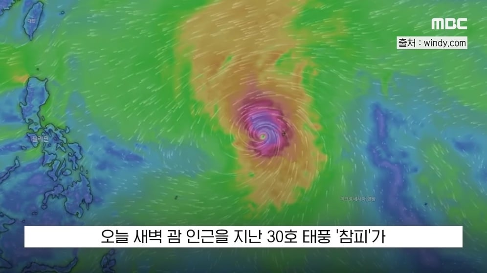
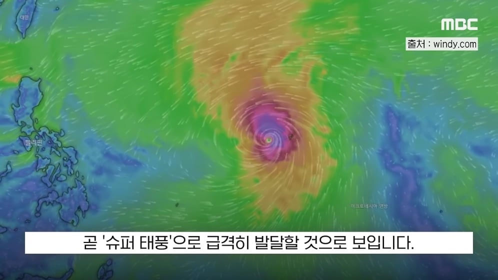
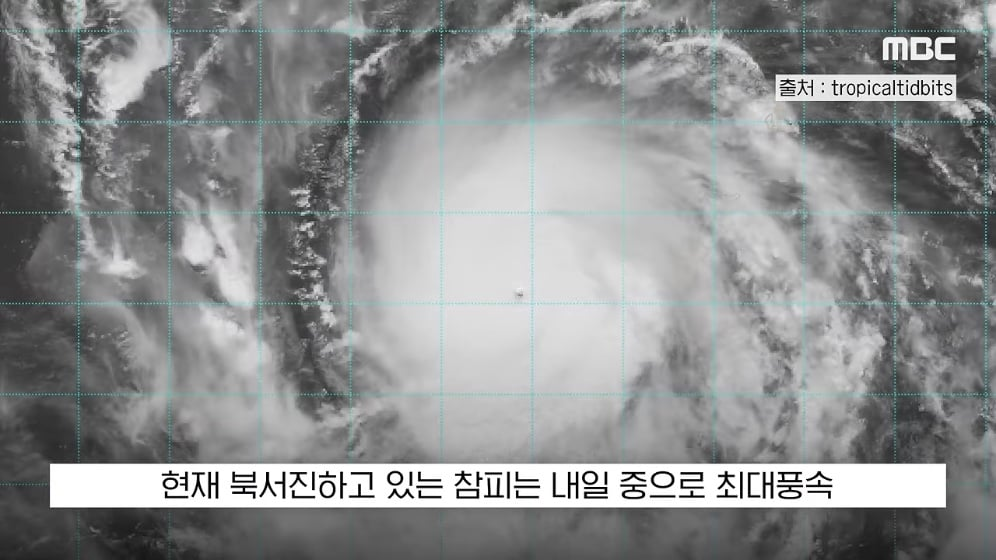
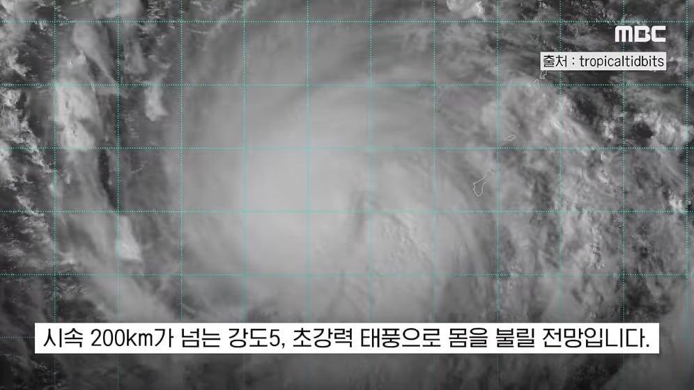
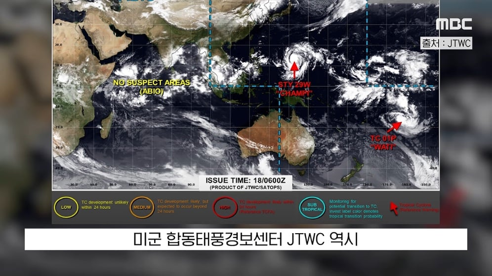
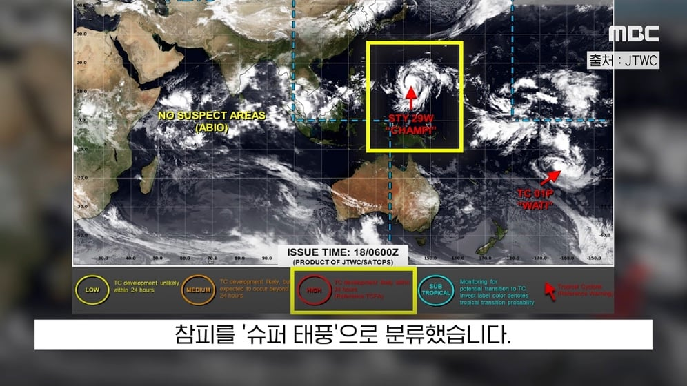
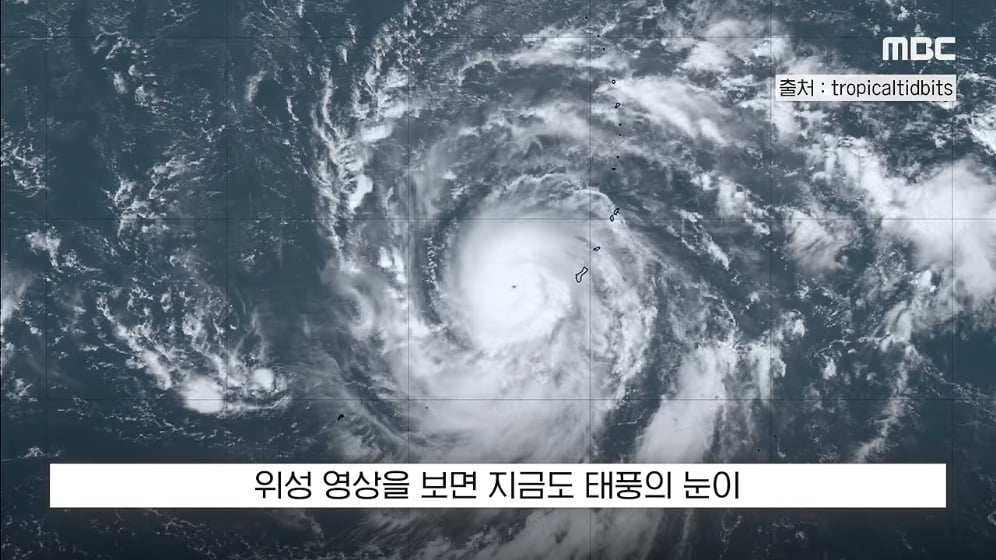
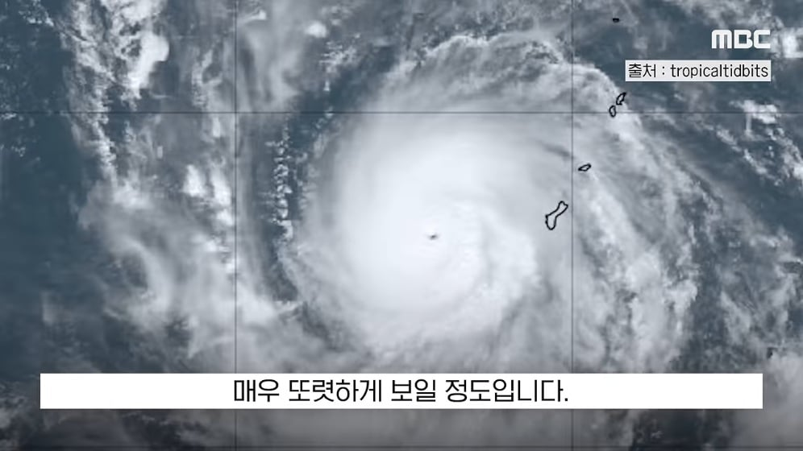
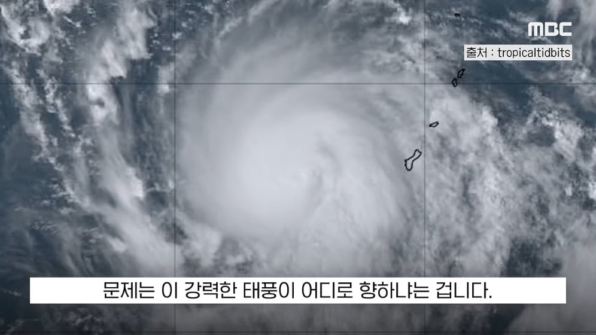
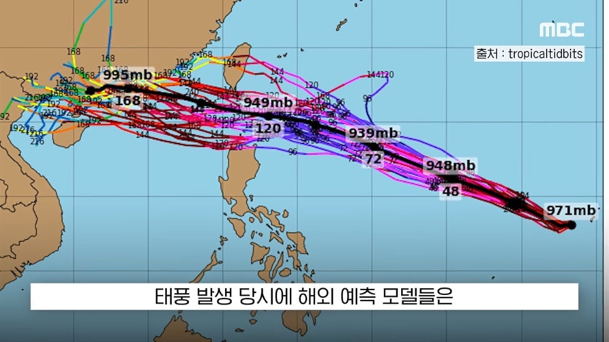
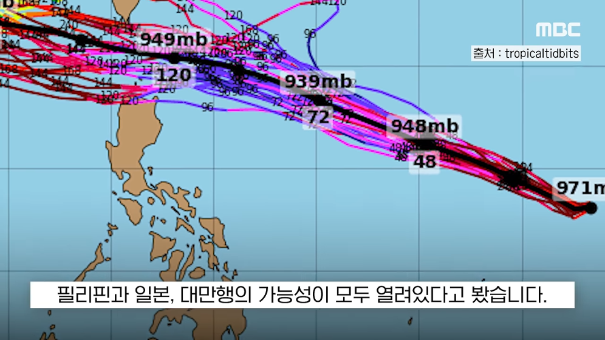
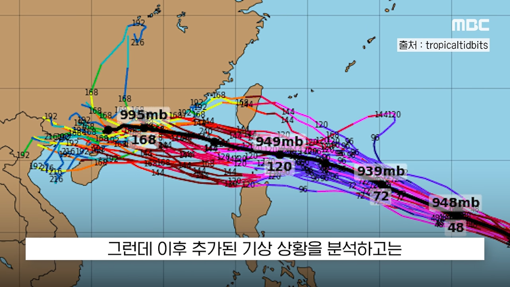
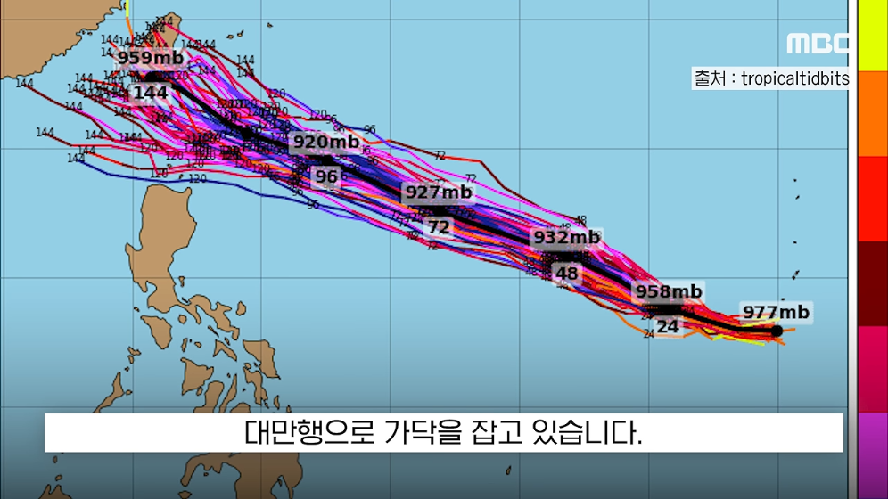
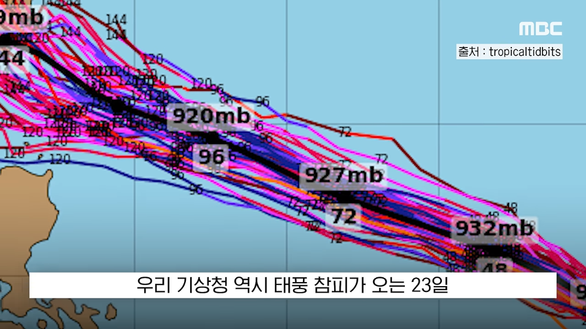
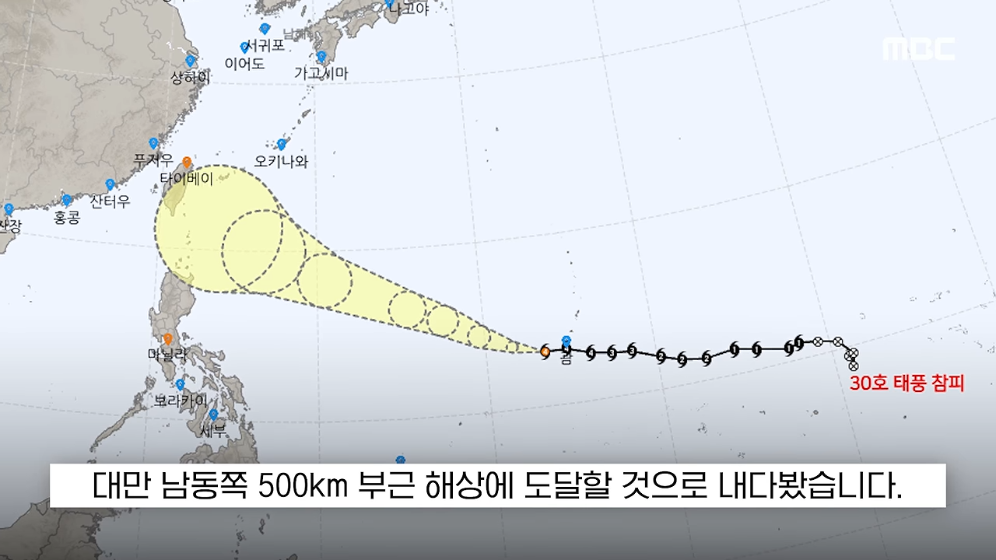
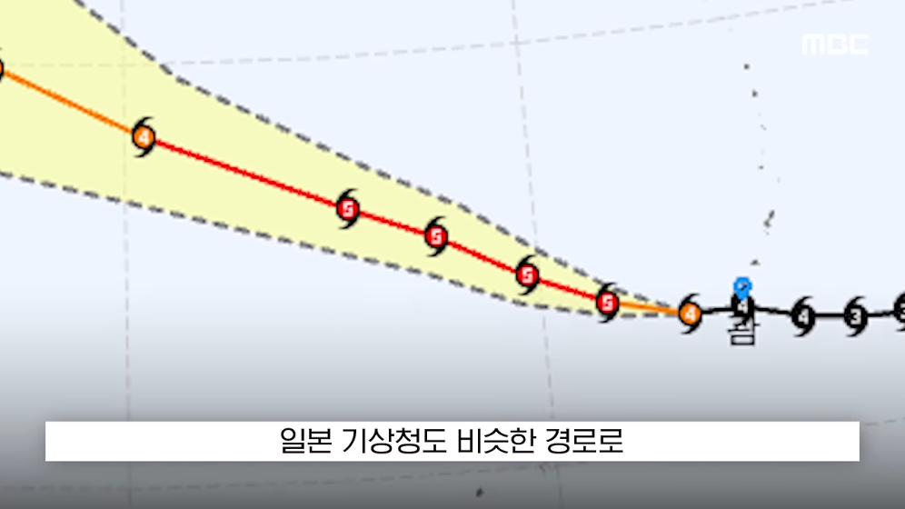
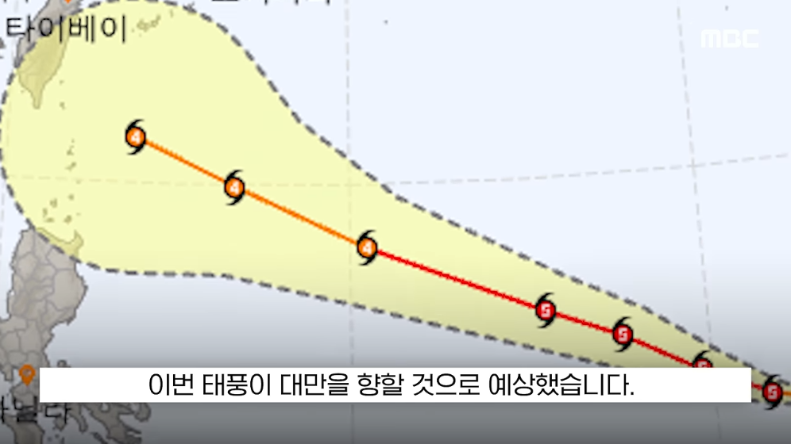

















우지챠...
어캐 이름이 참피 ㅋㅋㅋ
1,2번 태풍지도 색 배합조차 참피임ㅋㅋㅋ
좆같은 참피새끼
태풍 오면 어떻게 함?
몰라레후!
슈퍼 참피
참피?
쿠이쿠이.. 실장태풍을 보여주는데스 덤비는데샷!
똥닝겐상을 모조리 죽이는 데스~~
그날 대만은 해골 3개를 받았다
몰라레후
레후
상해 오지마라
말투 차단 씨발아
삐죽폭풍
가을태풍이 ㄹㅇ 무섭다는데